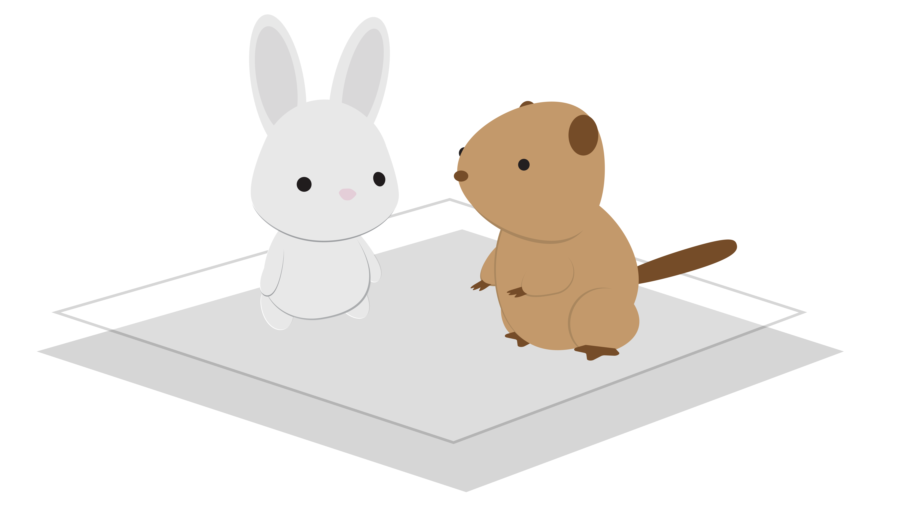

The objective of this project is to advocate for utilizing technology in a manner that encourages an early introduction to skills applicable across various daily activities. AR components, which introduce a sense of reality, can be triggered through image targets scattered throughout a physcial storybook. Essentially, AR storybook represents a contemporary adaptation of traditional storytelling, seamlessly incorporating advancing technological features that are becoming increasily prevelant in society.
Highlights:
Developed and hosted with 8thWall
Illustrator and Blender for the illustrations and 3D models respectively